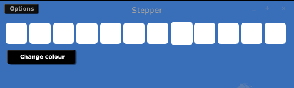

New Widgets, Part 3
We now have a simple step sequencer that the user can click on to enable steps. They can also see which is the current step in the sequence. But it remains quite useless until we can get it to communicate with the underlying instance of Csound. Cabbage widgets communicate with Csound through the use of named channels. For example, whenever a sure moves a slider in Cabbage, the value of that slider gets sent to Csound over a named channel bus. Each widget that is capable of affecting change in a Csound instrument must have a channel associated with it. So our widget must also have an associated channel. We can retrieve the name of the channel by accessing the string passed to the channel identifier.
class CabbageStepper : public Component, public Timer
{
String name, channel;
float numberOfSteps;
int stepBPM, currentStep;
Colour colour;
Array<int> stepStates;
public:
CabbageStepper (CabbageGUIType &cAttr, CabbagePluginAudioProcessorEditor* _owner)
: Component(),
owner(_owner),
name(cAttr.getStringProp(CabbageIDs::name)),
channel(cAttr.getStringProp(CabbageIDs::channel)),
colour(Colour::fromString(cAttr.getStringProp(CabbageIDs::colour))),
stepBPM(cAttr.getNumProp("stepbpm")),
numberOfSteps(cAttr.getNumProp("numberofsteps")),
currentStep(0)
{
(...)
Sending messages to Csound channels
An instance of Csound is created in the CabbagePluginAudioProcessor class, but we don't need to access it directly. We need only add some messages to the outgoing messages which are stored in CabbagePluginAudioProcesso::messageQueue. To access our main AudioProcessror class we can call the CabbagePluginAudioProcessorEditor::getFilter() method. We can then add some messages to the outgoing queue. At every k-boundary Cabbage will send the messages to Csound, this ensures complete thread safety. The best place to add messages to our queue is in the timerCallback() function.
void CabbageStepper::timerCallback()
{
currentStep = currentStep<11 ? currentStep+1 : 0;
int valueToSendToCsound = stepStates[currentStep]==1 ? currentStep+1 : 0;
owner->getFilter()->messageQueue.addOutgoingChannelMessageToQueue(channel, valueToSendToCsound, String::empty);
repaint();
}
addOutgoingChannelMessageToQueue(...) takes three parameters. The first parameter is the name of the channel to communicate with Csound on. The next parameter is the value to send, and the final parameter is the message type, which is only used for special message types. In most cases this can be set to an empty string.
With this final method in place, Cabbage will send messages to Csound on each step. It will send a 0 if the step is disabled, otherwise it will send the step index+1. In order to use this widget with a Csound instrument we can do something like this.
<Cabbage>
form size(500, 100), caption("Stepper"), pluginID("plu1"), colour(57, 110, 185)
stepper bounds(10, 10, 480, 40), channel("step1"), colour("white"), numberofsteps(12), stepbpm(120)
</Cabbage>
<CsoundSynthesizer>
<CsOptions>
-m0d
</CsOptions>
<CsInstruments>
sr = 44100
ksmps = 16
nchnls = 2
0dbfs=1
instr 1
if changed:k(chnget:k("step1"))==1 && chnget:k("step1")!=0 then
event "i", 2, 0, 3
endif
endin
instr 2
print p1
a1 expon 1, p3, 0.001
a2 oscili a1, 256
outs a2, a2
endin
</CsInstruments>
<CsScore>
i1 0 5000
</CsScore>
</CsoundSynthesizer>
Whenever channel "step1" changes, and is not equal to 0, we trigger instr 2 to play a note.
Using Csound to control our widget
Our new stepper widget serves as a good example of how easy it is to add new widget types to Cabbage, but it's still not quite ready for public consumption. There are still quite a few additions we could make to enhance the widget and provide users with a greater level of control. Perhaps the most important thing is to provide users with a way of turning the sequencer on or off. We could simply add a check box to our widget that will turn it on or off, but this will inevitably leads to problems if you wish to stack several steppers on top of each other. It would be very frustrating for the end-user if they have to enable each stepper widget manually. A better approach would be to provide them with a way of turning the sequence on or off from Csound. We can do this using identifier channels.
The CabbagePluginAudioProcessor::updateGUIControls() method checks for incoming identifier strings from Csound and gets called at every k-cycle. Identifier strings can be sent to a Cabbage widget using the chnset opcode in Csound. Once a string is sent, Cabbage parses it and updates the widget accordingly. Each widget that accepts identifier strings needs to implement an update(...) function. If you browse through the CabbagePluginAudioProcessor::updateGUIControls() code you'll seeing the following conditional statement.
//sample stepper widget
else if(checkForIdentifierMessage(getFilter()->getGUILayoutCtrls(i), "stepper"))
{
((CabbageStepper*)layoutComps[i])->update(getFilter()->getGUILayoutCtrls(i));
getFilter()->getGUILayoutCtrls(i).setStringProp(CabbageIDs::identchannelmessage, "");
}
The checkForIdentifierMessage(...) method checks for the existence of an identifier string for a particular widget type. If an incoming string identifier is found it calls the widget classes update(...) function.
Writing an update function
The update function gets passed a CabbageGUIType class object which provides us with all the information we need in order to update out widget. If for example we want to allow users to update the widget's colour from Csound we might do something like this in our update(...) method.
void CabbageStepper::update(CabbageGUIType cAttr)
{
if(colour.toString()!=cAttr.getStringProp("colour"))
{
colour = Colour::fromString(cAttr.getStringProp("colour"));
}
}
We can now change the colour of our widget using the following Cabbage/Csound code:
<Cabbage>
form size(500, 150), caption("Stepper"), pluginID("plu1"), colour(57, 110, 185)
stepper bounds(10, 10, 480, 40), channel("step1"), colour("white"), numberofsteps(12), stepbpm(120), identchannel("stepIdent")
button bounds(12, 58, 120, 25), channel("colourButton"), text("Change colour")
</Cabbage>
<CsoundSynthesizer>
<CsOptions>
-m0d
</CsOptions>
<CsInstruments>
sr = 44100
ksmps = 16
nchnls = 2
0dbfs=1
instr 1
if changed:k(chnget:k("colourButton"))==1 then
if chnget:k("colourButton")==1 then
chnset "colour(255, 255, 0)", "stepIdent"
else
chnset "colour(255, 255, 255)", "stepIdent"
endif
endif
(...)

It won't take much to update our update() function so that users can turn the step sequencer on and off, as well as control the tempo. We will need to add a new member variable to hold the running state of the widget. We can call it isRunning, and we will let users use the pre-existing active() identifier to set the running state. Our updated constructor will look like this.
CabbageStepper::CabbageStepper (CabbageGUIType &cAttr, CabbagePluginAudioProcessorEditor* _owner)
: Component(),
owner(_owner),
name(cAttr.getStringProp(CabbageIDs::name)),
channel(cAttr.getStringProp(CabbageIDs::channel)),
colour(Colour::fromString(cAttr.getStringProp(CabbageIDs::colour))),
stepBPM(cAttr.getNumProp("stepbpm")),
numberOfSteps(cAttr.getNumProp("numberofsteps")),
currentStep(0),
isRunning(cAttr.getNumProp(CabbageIDs::active)==1 ? true : false)
{
for(int i = 0; i < numberOfSteps;i++ )
stepStates.add(0);
startTimer((60.f/stepBPM)*1000.f);
}
And our new update() function will now look like this.
void CabbageStepper::update(CabbageGUIType cAttr)
{
if(cAttr.getNumProp("stepbpm")!=stepBPM)
{
stepBPM = cAttr.getNumProp("stepbpm");
}
if(cAttr.getNumProp(CabbageIDs::active)!=isRunning)
{
isRunning = cAttr.getNumProp(CabbageIDs::active);
if(isRunning==1)
startTimer((60.f/stepBPM)*1000.f);
else
stopTimer();
}
if(colour.toString()!=cAttr.getStringProp("colour"))
colour = Colour::fromString(cAttr.getStringProp("colour"));
}
Putting it all together
Now that we have a way to turn on and off our widget we can create a more musically interesting instrument. We can for example stack several stepper widgets on top of each to create a simple grid sequencer. Below is a simple instrument demonstrating this. It uses a simple User Defined Opcode to enable and disable the steppers, but everything else is kept as simple as possible.
<Cabbage>
form size(500, 430), caption("Stepper"), pluginID("plu1"), colour(57, 110, 185)
button bounds(178, 345, 135, 31), channel("startButton"), colour:1("lime"), text("Start", "Stop")
stepper bounds(10, 10, 480, 40), channel("c4"), colour("white"), numberofsteps(12), stepbpm(120), active(0), identchannel("stepIdent1")
stepper bounds(10, 50, 480, 40), channel("b3"), colour("white"), numberofsteps(12), stepbpm(120), active(0), identchannel("stepIdent2")
stepper bounds(10, 90, 480, 40), channel("a3"), colour("white"), numberofsteps(12), stepbpm(120), active(0), identchannel("stepIdent3")
stepper bounds(10, 130, 480, 40), channel("g3"), colour("white"), numberofsteps(12), stepbpm(120), active(0), identchannel("stepIdent4")
stepper bounds(10, 170, 480, 40), channel("f3"), colour("white"), numberofsteps(12), stepbpm(120), active(0), identchannel("stepIdent5")
stepper bounds(10, 210, 480, 40), channel("e3"), colour("white"), numberofsteps(12), stepbpm(120), active(0), identchannel("stepIdent6")
stepper bounds(10, 250, 480, 40), channel("d3"), colour("white"), numberofsteps(12), stepbpm(120), active(0), identchannel("stepIdent7")
stepper bounds(10, 290, 480, 40), channel("c3"), colour("white"), numberofsteps(12), stepbpm(120), active(0), identchannel("stepIdent8")
rslider bounds(12, 340, 80, 80), channel("bpm"), range(40, 180, 60), text("BPM"), trackercolour("lime")
rslider bounds(92, 340, 80, 80), channel("gain"), range(0, .7, .5), text("Gain"), trackercolour("lime")
</Cabbage>
<CsoundSynthesizer>
<CsOptions>
-m0d
</CsOptions>
<CsInstruments>
sr = 44100
ksmps = 16
nchnls = 2
0dbfs=1
opcode controlSteppers, k, kk
kStart, kBPM xin
SMessage sprintfk "stepbpm(%d), active(%d)", kBPM, kStart
chnset SMessage, "stepIdent1"
chnset SMessage, "stepIdent2"
chnset SMessage, "stepIdent3"
chnset SMessage, "stepIdent4"
chnset SMessage, "stepIdent5"
chnset SMessage, "stepIdent6"
chnset SMessage, "stepIdent7"
chnset SMessage, "stepIdent8"
xout kStart
endop
;main instrument
instr 1
;check if user has pressed the start button
kStartStop chnget "startButton"
kTempo chnget "bpm"
if changed:k(kStartStop)==1 || changed:k(kTempo)==1 then
if chnget:k("startButton")==1 then
k1 controlSteppers 1, kTempo
else
k1 controlSteppers 0, kTempo
endif
endif
;trigger notes according to which steps are activated
if changed:k(chnget:k("c4"))==1 && chnget:k("c4")!=0 then
event "i", 2, 0, 3, cpsmidinn(72)
elseif changed:k(chnget:k("b3"))==1 && chnget:k("b3")!=0 then
event "i", 2, 0, 3, cpsmidinn(71)
elseif changed:k(chnget:k("a3"))==1 && chnget:k("a3")!=0 then
event "i", 2, 0, 3, cpsmidinn(69)
elseif changed:k(chnget:k("g3"))==1 && chnget:k("g3")!=0 then
event "i", 2, 0, 3, cpsmidinn(67)
elseif changed:k(chnget:k("f3"))==1 && chnget:k("f3")!=0 then
event "i", 2, 0, 3, cpsmidinn(65)
elseif changed:k(chnget:k("e3"))==1 && chnget:k("e3")!=0 then
event "i", 2, 0, 3, cpsmidinn(64)
elseif changed:k(chnget:k("d3"))==1 && chnget:k("d3")!=0 then
event "i", 2, 0, 3, cpsmidinn(62)
elseif changed:k(chnget:k("c3"))==1 && chnget:k("c3")!=0 then
event "i", 2, 0, 3, cpsmidinn(60)
endif
endin
;simple synthesiser
instr 2
print p1
a1 expon chnget:i("gain"), p3, 0.001
a2 oscili a1, p4
outs a2, a2
endin
</CsInstruments>
<CsScore>
i1 0 5000
</CsScore>
</CsoundSynthesizer>